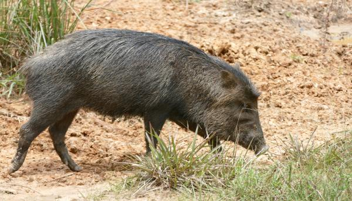

| Pecarí barbiclanco | ||
|---|---|---|
|
El Tayassu pecari es un mamífero que habita casi todos los países de América del Sur y Central. Pertenece a la misma familia que el jabalí y los cerdos, por lo que su apariencia es similar: cuerpo rechoncho, patas cortas y hocico alargado. El pecarí, también llamado puerco de monte, es de hábitos diurnos y puede vivir tanto cerca de la costa como en bosques húmedos o zonas semidesérticas. El mayor peligro del pecarí son los depredadores: el jaguar y el puma lo cazan como alimento, mientras el hombre lo caza por su piel. | ||
|  | ||